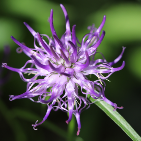
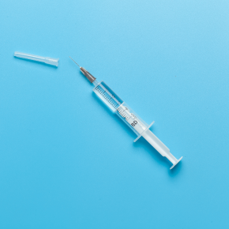
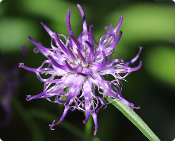
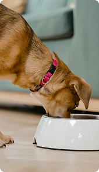
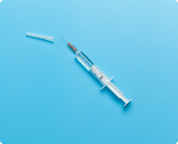

Arthrohard
Lab-V Arthrohard Preparat
na wsparcie stawów dla psa i kota
Arthrohard to dobrze przyswajalny suplement diety w formie
syropu,
stworzony z myślą o zdrowiu stawów Twojego psa lub kota.
Co wyróżnia nasz preparat
-
Innowacyjny dodatek -
Czarciego PazuraZapewnia dodatkowe wsparcie w zwalczaniu stanów bólowych i zapalnych. Skoncentrowane składniki aktywne, opracowane we współpracy z lekarzami weterynarii, przynoszą szybkie i zauważalne efekty, szczególnie korzystne dla zwierząt z poważnymi problemami stawowymi.
 -
Wygoda -
dwa sposoby podawania-
1Bezpośrednio do pyszczka
-
2Zmieszany z karmą
-
-
Skuteczność -
skoncentrowana dawkaTylko jedna porcja dziennie. To nie tylko wygoda, ale również gwarancja, że Twoje zwierzę otrzymuje wszystko, czego potrzebuje, aby cieszyć się zdrowiem i aktywnością na długo. Skorzystaj z zalet Arthrohard i zobacz różnicę w komforcie życia swojego zwierzęcia.

-

-

-

Działanie preparatu
-
1
Wsparcie rozwoju chrząstki stawowej
-
2
Działanie chondroprotekcyjne
-
3
Zmniejszenie stanu zapalnego i bólu
-
4
Wzmocnienie stawów
-
5
Ochrona przed mikrourazami
-
6
Regeneracja po urazach i zabiegach ortopedycznych
-
7
Poprawa jakości życia
Skład w 5 ml
Co dają poszczególne składniki:
-
Siarczan glukozaminy
650 mg
Glukozamina jest naturalnym składnikiem chrząstki. Dodatek glukozaminy przyczynia się do zwiększenia produkcji glikozaminoglikanów (m.in. siarczanu keratanu, heparanu, kwasu hialuronowego), które pomagają w odbudowie chrząstki, co jest szczególnie korzystne dla zwierząt ze zmianami zwyrodnieniowymi stawów.
-
Siarczan chondroityny
300 mg
Chondroityna, podobnie jak glukozamina, jest składnikiem chrząstki. Chondroityna pomaga zwalczać enzymy, które niszczą chrząstkę, a także pomaga chrząstce zatrzymać wodę, co jest ważne dla jej sprężystości i absorpcji wstrząsów.
-
Kwas hialuronowy
50 mg
Kwas hialuronowy jest kluczowym składnikiem płynu stawowego, który działa jak smar i amortyzator dla stawów. Suplementacja kwasem hialuronowym może pomóc w utrzymaniu prawidłowej objętości i konsystencji płynu stawowego.
-
Czarci pazur
250 mg
Czarci pazur jest rośliną, która ma właściwości przeciwzapalne i przeciwbólowe. Może to pomóc zwierzętom, które doświadczają bólu i stanu zapalnego związanego z problemami ze stawami.
-
Witamina C
50 mg
Witamina C jest potężnym przeciwutleniaczem, który może pomóc w ochronie stawów poprzez neutralizację wolnych rodników, które mogą uszkadzać chrząstkę. Ponadto, witamina C odgrywa ważną rolę w produkcji kolagenu, kluczowego składnika chrząstki.
-
MSM
250 mg
Metylosulfonylometan, czyli MSM, to naturalny związek siarki, który pomaga w utrzymaniu zdrowych stawów poprzez zmniejszenie stanu zapalnego i bólu. MSM może również pomagać w produkcji kolagenu, co przyczynia się do zdrowia chrząstki stawowej.